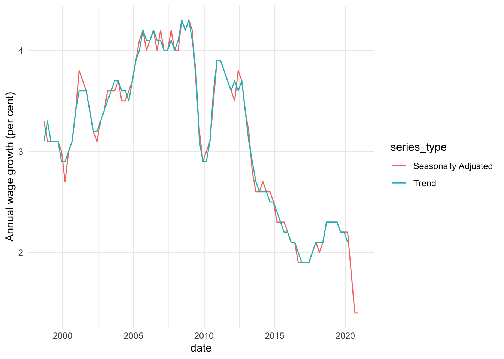

Overview
{readabs} helps you easily download, import, and tidy data from the Australian Bureau of Statistics within R. This saves you time manually downloading and tediously tidying data and allows you to spend more time on your analysis.
Installation
Install the latest CRAN version of {readabs} with:
install.packages("readabs")You can install the development version of {readabs} from GitHub with:
# if you don't have devtools installed, first run:
# install.packages("devtools")
devtools::install_github("mattcowgill/readabs")Usage
The main function in {readabs} is read_abs(), which downloads, imports, and tidies time series data from the ABS website.
There are some other functions you may find useful.
-
read_abs_local()imports and tidies time series data from ABS spreadsheets stored on a local drive. Thanks to Hugh Parsonage for contributing to this functionality. -
separate_series()splits theseriescolumn of a tidied ABS time series spreadsheet into multiple columns, reducing the manual wrangling that’s needed to work with the data. Thanks to David Diviny for writing this function. -
download_abs_data_cube()downloads a data cube (ie. non-time series spreadsheet) from the ABS website. Thanks to David Diviny for writing this function. -
read_cpi()imports the Consumer Price Index numbers as a two-column tibble:dateandcpi. This is useful for joining to other series to adjust data for changes in consumer prices. -
read_payrolls()downloads, imports, and tidies tables from the ABS Weekly Payroll Jobs dataset. -
read_awe()returns a long time series of Average Weekly Earnings data.
Using read_abs()
To download all the time series data from an ABS catalogue number to your disk, and import the data to R as a single tidy data frame, use read_abs().
First we’ll load {readabs} and the {tidyverse}:
library(readabs)
#> Environment variable 'R_READABS_PATH' is unset. Downloaded files will be saved in a temporary directory.
#> You can set 'R_READABS_PATH' at any time. To set it for the rest of this session, use
#> Sys.setenv(R_READABS_PATH = <path>)
library(tidyverse)
#> ── Attaching packages ─────────────────────────────────────── tidyverse 1.3.0 ──
#> ✓ ggplot2 3.3.2 ✓ purrr 0.3.4.9000
#> ✓ tibble 3.0.4 ✓ dplyr 1.0.2
#> ✓ tidyr 1.1.2 ✓ stringr 1.4.0.9000
#> ✓ readr 1.4.0.9000 ✓ forcats 0.5.0.9000
#> ── Conflicts ────────────────────────────────────────── tidyverse_conflicts() ──
#> x dplyr::filter() masks stats::filter()
#> x dplyr::lag() masks stats::lag()Now we’ll create one data frame that contains all the time series data from the Wage Price Index, catalogue number 6345.0:
all_wpi <- read_abs("6345.0")
#> Finding filenames for tables corresponding to ABS catalogue 6345.0
#> Attempting to download files from catalogue 6345.0, Wage Price Index, Australia
#> Extracting data from downloaded spreadsheets
#> Tidying data from imported ABS spreadsheetsThis is what it looks like:
str(all_wpi)
#> tibble [59,377 × 12] (S3: tbl_df/tbl/data.frame)
#> $ table_no : chr [1:59377] "634501" "634501" "634501" "634501" ...
#> $ sheet_no : chr [1:59377] "Data1" "Data1" "Data1" "Data1" ...
#> $ table_title : chr [1:59377] "Table 1. Total Hourly Rates of Pay Excluding Bonuses: Sector, Original, Seasonally Adjusted and Trend" "Table 1. Total Hourly Rates of Pay Excluding Bonuses: Sector, Original, Seasonally Adjusted and Trend" "Table 1. Total Hourly Rates of Pay Excluding Bonuses: Sector, Original, Seasonally Adjusted and Trend" "Table 1. Total Hourly Rates of Pay Excluding Bonuses: Sector, Original, Seasonally Adjusted and Trend" ...
#> $ date : Date[1:59377], format: "1997-09-01" "1997-09-01" ...
#> $ series : chr [1:59377] "Quarterly Index ; Total hourly rates of pay excluding bonuses ; Australia ; Private ; All industries ;" "Quarterly Index ; Total hourly rates of pay excluding bonuses ; Australia ; Public ; All industries ;" "Quarterly Index ; Total hourly rates of pay excluding bonuses ; Australia ; Private and Public ; All industries ;" "Quarterly Index ; Total hourly rates of pay excluding bonuses ; Australia ; Private ; All industries ;" ...
#> $ value : num [1:59377] 67.4 64.7 66.7 67.3 64.8 66.6 67.3 64.8 66.7 NA ...
#> $ series_type : chr [1:59377] "Original" "Original" "Original" "Seasonally Adjusted" ...
#> $ data_type : chr [1:59377] "INDEX" "INDEX" "INDEX" "INDEX" ...
#> $ collection_month: chr [1:59377] "3" "3" "3" "3" ...
#> $ frequency : chr [1:59377] "Quarter" "Quarter" "Quarter" "Quarter" ...
#> $ series_id : chr [1:59377] "A2603039T" "A2603989W" "A2603609J" "A2713846W" ...
#> $ unit : chr [1:59377] "Index Numbers" "Index Numbers" "Index Numbers" "Index Numbers" ...It only takes you a few lines of code to make a graph from your data:
all_wpi %>%
filter(series == "Percentage Change From Corresponding Quarter of Previous Year ; Australia ; Total hourly rates of pay excluding bonuses ; Private and Public ; All industries ;",
!is.na(value)) %>%
ggplot(aes(x = date, y = value, col = series_type)) +
geom_line() +
theme_minimal() +
labs(y = "Annual wage growth (per cent)")
In the example above we downloaded all the time series from a catalogue number. This will often be overkill. If you know the data you need is in a particular table, you can just get that table like this:
wpi_t1 <- read_abs("6345.0", tables = 1)
#> Warning in read_abs("6345.0", tables = 1): `tables` was providedyet `check_local
#> = TRUE` and fst files are available so `tables` will be ignored.If you want multiple tables, but not the whole catalogue, that’s easy too:
wpi_t1_t5 <- read_abs("6345.0", tables = c("1", "5a"))
#> Warning in read_abs("6345.0", tables = c("1", "5a")): `tables` was providedyet
#> `check_local = TRUE` and fst files are available so `tables` will be ignored.In most cases, the series column will contain multiple components, separated by ‘;’. The separate_series() function can help wrangling this column.
For more examples, please see the readabs vignette (run browseVignettes("readabs")).
Bug reports and feedback
GitHub issues containing error reports or feature requests are welcome. Alternatively you can email the package maintainer at mattcowgill at gmail dot com.
Disclaimer
The {readabs} package is not associated with the Australian Bureau of Statistics. All data is provided subject to any restrictions and licensing arrangements noted on the ABS website.
Awesome Official Statistics Software

We’re pleased to be included in a list of software that can be used to work with official statistics.